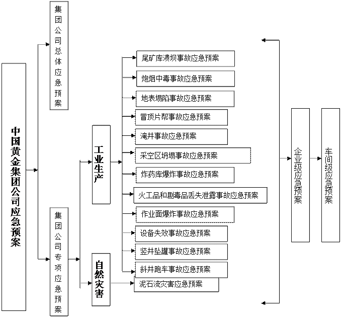
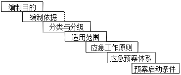
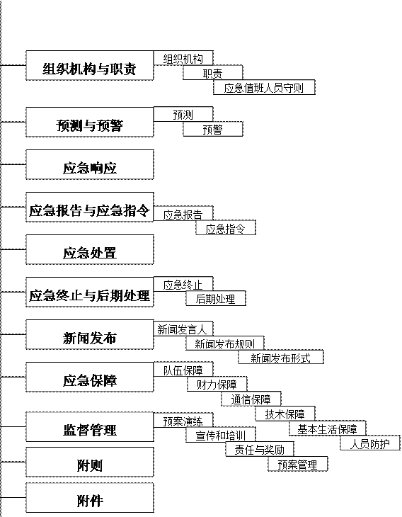
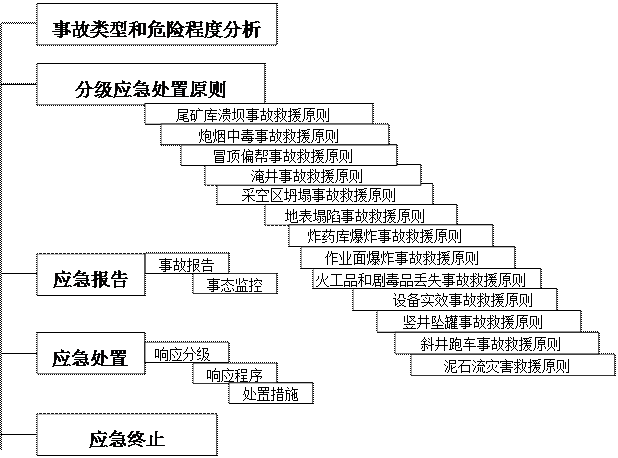
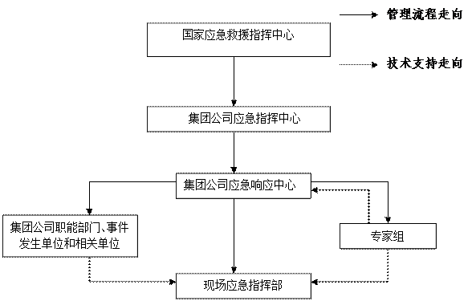
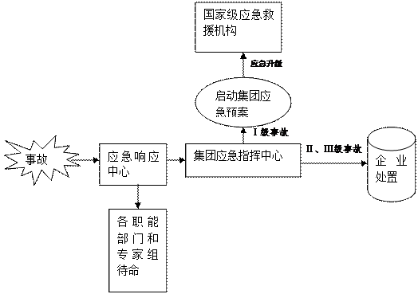
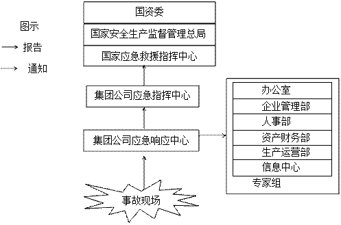
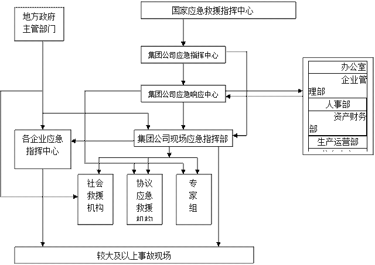

中国黄金集团公司
总体应急预案
中国黄金集团公司
二��一��年四月
目 录
1总则・・・・・・・・・・・・・・・・・・・・・・・・・・・・・・・・・・・・・・・・・・・・・・・・・・・・4
1.1编制目的・・・・・・・・・・・・・・・・・・・・・・・・・・・・・・・・・・・・・・・・・・4
1.2编制依据・・・・・・・・・・・・・・・・・・・・・・・・・・・・・・・・・・・・・・・・・・4
1.3分类与分级・・・・・・・・・・・・・・・・・・・・・・・・・・・・・・・・・・・・・・・・4
1.4适用范围・・・・・・・・・・・・・・・・・・・・・・・・・・・・・・・・・・・・・・・・・・9
1.5应急工作原则・・・・・・・・・・・・・・・・・・・・・・・・・・・・・・・・・・・・・・9
1.6应急预案体系・・・・・・・・・・・・・・・・・・・・・・・・・・・・・・・・・・・・・10
1.7应急预案启动条件・・・・・・・・・・・・・・・・・・・・・・・・・・・・・・・・・13
2组织机构与职责・・・・・・・・・・・・・・・・・・・・・・・・・・・・・・・・・・・・・・・・・13
2.1组织机构・・・・・・・・・・・・・・・・・・・・・・・・・・・・・・・・・・・・・・・・・13
2.2职责・・・・・・・・・・・・・・・・・・・・・・・・・・・・・・・・・・・・・・・・・・・・・14
3预测与预警・・・・・・・・・・・・・・・・・・・・・・・・・・・・・・・・・・・・・・・・・・・・・23
3.1预测・・・・・・・・・・・・・・・・・・・・・・・・・・・・・・・・・・・・・・・・・・・・・23
3.2预警・・・・・・・・・・・・・・・・・・・・・・・・・・・・・・・・・・・・・・・・・・・・・24
4 应急响应・・・・・・・・・・・・・・・・・・・・・・・・・・・・・・・・・・・・・・・・・・・・・・・24
5应急报告与应急指令・・・・・・・・・・・・・・・・・・・・・・・・・・・・・・・・・・・・・26
5.1应急报告・・・・・・・・・・・・・・・・・・・・・・・・・・・・・・・・・・・・・・・・・26
5.2应急指令・・・・・・・・・・・・・・・・・・・・・・・・・・・・・・・・・・・・・・・・・27
6应急处置・・・・・・・・・・・・・・・・・・・・・・・・・・・・・・・・・・・・・・・・・・・・・・・28
7应急终止与后期处置・・・・・・・・・・・・・・・・・・・・・・・・・・・・・・・・・・・・・28
7.1应急终止・・・・・・・・・・・・・・・・・・・・・・・・・・・・・・・・・・・・・・・・・28
7.2后期处置・・・・・・・・・・・・・・・・・・・・・・・・・・・・・・・・・・・・・・・・・28
8新闻发布・・・・・・・・・・・・・・・・・・・・・・・・・・・・・・・・・・・・・・・・・・・・・・・29
8.1新闻发言人・・・・・・・・・・・・・・・・・・・・・・・・・・・・・・・・・・・・・・・29
8.2新闻发布原则・・・・・・・・・・・・・・・・・・・・・・・・・・・・・・・・・・・・・29
8.3新闻发布形式・・・・・・・・・・・・・・・・・・・・・・・・・・・・・・・・・・・・・29
9应急保障・・・・・・・・・・・・・・・・・・・・・・・・・・・・・・・・・・・・・・・・・・・・・・・29
9.1队伍保障・・・・・・・・・・・・・・・・・・・・・・・・・・・・・・・・・・・・・・・・・29
9.2财力保障・・・・・・・・・・・・・・・・・・・・・・・・・・・・・・・・・・・・・・・・・30
9.3物资保障・・・・・・・・・・・・・・・・・・・・・・・・・・・・・・・・・・・・・・・・・30
9.4通讯保障・・・・・・・・・・・・・・・・・・・・・・・・・・・・・・・・・・・・・・・・・30
9.5技术保障・・・・・・・・・・・・・・・・・・・・・・・・・・・・・・・・・・・・・・・・・30
9.6基本生活保障・・・・・・・・・・・・・・・・・・・・・・・・・・・・・・・・・・・・・30
9.7人员防护・・・・・・・・・・・・・・・・・・・・・・・・・・・・・・・・・・・・・・・・・31
10监督管理・・・・・・・・・・・・・・・・・・・・・・・・・・・・・・・・・・・・・・・・・・・・・・31
10.1预案演练・・・・・・・・・・・・・・・・・・・・・・・・・・・・・・・・・・・・・・・・31
10.2宣传和培训・・・・・・・・・・・・・・・・・・・・・・・・・・・・・・・・・・・・・・32
10.3责任与奖惩・・・・・・・・・・・・・・・・・・・・・・・・・・・・・・・・・・・・・・32
10.4预案管理・・・・・・・・・・・・・・・・・・・・・・・・・・・・・・・・・・・・・・・・33
11附则・・・・・・・・・・・・・・・・・・・・・・・・・・・・・・・・・・・・・・・・・・・・・・・・・・33
12附件・・・・・・・・・・・・・・・・・・・・・・・・・・・・・・・・・・・・・・・・・・・・・・・・・・33
为了全面贯彻落实“安全第一、预防为主、综合治理”的安全生产方针，规范应急管理工作，预防和控制此生灾害的发生，提高突发事故的应急救援反应速度和协调水平，增强综合处置较大及以上事故的能力，保障企业员工和公众的生命安全，最大限度地减少财产损失、环境破坏和社会影响，特制定本预案。
《中华人民共和国安全生产法》
《中华人民共和国矿山安全法》
《中华人民共和国突发事件应对法》
《中华人民共和国矿山安全法实施条例》
《国务院关于特大安全事故行政责任追究的规定》
《安全生产事故报告和调查处理条例》
《生产安全重特大事故和重大未遂伤亡事故信息处置办法（试行）》
《生产经营单位安全生产事故应急预案编制导则》
《非煤矿山危险危害因素辨识》
《国家突发公共事件总体应急预案》(国务院2006年1月8日发布，自2006年1月8日起施行)
《国家安全生产事故灾难应急预案》
集团公司事故是指在集团公司所属全资子公司、控股子公司（以下称企业）范围内发生或可能发生，造成或可能造成人员伤亡、财产损失、生态环境破坏或社会影响的大事故。
根据《非煤矿山危险危害因素辨识》，结合集团公司开展重大安全隐患排查整改治理的结果，集团公司初步确定9个危险危害因素，每个危险危害因素都有可能导致较大及以上事故发生，或造成重大的社会影响，一旦发生事故，将会给国家、集团公司、企业和职工带来严重的灾难。
危险危害因素辨识表
|
序号 |
危险性 |
危险性分析 |
可能引发的事故类别 |
|
1 |
透水危险性 |
一是地下存有不明水源，在生产掘进过程中可能会穿破水源，导致大量水涌出，淹没所在工作面、中段、提升井。二是非透水坝型的尾矿库坝体，由于库区排水排渗设施失效，导致库区浸润线过高，使库区水从坝体中渗出，造成坝体失稳，导致溃坝。 |
淹井事故、尾矿库溃坝事故 |
|
2 |
坍塌危险性 |
一方面黄金地下开采矿山多用空场法采矿，这种方法在采矿后将留下大量的空区。这些空区在外力破坏作用下，将会导致冒顶片帮，大面积坍塌，严重时会导致地表塌陷，井下泥石流。另一方面在工作面上，由于采矿掘进作业导致原岩应力发生变化，顶底板稳固定遭到破坏，将会导致顶板坍塌，底板拱起。 |
空区坍塌事故、冒顶片帮事故、地表塌陷事故。 |
|
3 |
爆炸危险性 |
炸药库存放了企业生产用的炸药，一般有1-3天量。当炸药库存在人为管理问题、安全设施失效时，可能要引起炸药库爆炸。 当企业实施作业面爆破作业时，由于操作人员违章作业或者爆破器材质量不合格，可能引发意外爆炸，导致作业人员受伤或死亡。 |
炸药库爆炸事故、作业面爆炸事故 |
|
4 |
有毒有害气体 涌出危险性 |
黄金矿山企业在生产过程中，采矿掘进爆破会产生大量CO。当通风条件差，管理不当，可能会使作业人员吸入这些有毒气体，引起中毒，严重时致人死亡。 |
炮烟中毒事故 |
|
5 |
大面积停电 危险性 |
停电的危险主要是导致井下井上生产安全设备设施无法正常运转，如通风设备、提升设备和排水设备，从而产生缺氧窒息、人员被困或井巷淹没，威胁作业人员生命安全。 |
设备失效事故 |
|
6 |
洪水危险性 |
大量降雨产生的洪水超过矿山井口设计水位，水将通过井口灌入井下，威胁井下作业人员的安全。大量降雨产生洪水，超过尾矿库排洪调洪能力，使大量洪水进入尾矿库，从尾矿坝顶漫出，致使坝体失稳。大量洪水可能导致山体边坡松软，由于矿山企业多处于山区，大部分在沟底山坡处建有生产生活设施，一旦山体滑坡，产生泥石流，将威胁职工家属生命安全。 |
淹井事故、尾矿库溃坝事故、泥石流灾害事故。 |
|
7 |
火工品、剧毒品 丢失泄露危险性 |
黄金矿山由于生产工作工艺的特殊性，要使用火工品（炸药、雷管等）和剧毒品（NaCN）来完成采矿和提金作业，因此各企业会存有一定量的火工品和剧毒品，若如管理松懈，极有可能被不法分子盗取，一旦流入社会，将会造成极大的社会影响。 |
火工品和剧毒品丢失事故 |
|
8 |
地震危险性 |
地震对矿山设施的破坏作用主要是改变原有设施的力学平衡状态，导致设施的失稳，从而发生事故灾害。按照黄金矿山的生产实际，目前看，危险部位主要是采空区、巷道、尾矿坝。 |
采空区坍塌事故、冒顶片帮事故、尾矿库溃坝事故 |
|
9 |
提升危险性 |
黄金矿山企业多采用竖井和斜井开拓，并作为主要的提升系统。当竖井和斜井在工作过程中，危险部位主要是罐笼和斜井的提升绳，罐笼和斜井的安全设施，一旦这些部位实效，引起坠罐、跑车，将对职工造成极大危害。 |
竖井坠罐事故、斜井跑车事故 |
1.3.2.1根据事故的发生过程、性质，集团公司易发生的事故分为：
a)工业生产事故
工业生产事故主要包括尾矿库溃坝事故、炮烟中毒事故、冒顶片帮事故、淹井事故、采空区坍塌事故、地表塌陷事故、炸药库爆炸事故、作业面爆炸事故、火工品和剧毒品丢失事故、设备失效事故、竖井坠罐事故和斜井跑车事故。
b)自然灾害事故
自然灾害事故主要为泥石流灾害事故。
1.3.2.2集团公司所属各企业应进行危害识别、风险评估，确定本单位内可能发生或易发生的应急事件，并制定相应的应急预案体系。
1.3.2.1按照应急事故的性质、严重程度、可控性、影响范围等因素对事故分为ｌ级(集团公司级)、Ⅱ级(企业级)、Ⅲ级(车间级)，具体分级详见本预案附件3。
1.3.2.2各企业应按照应急事故的性质、严重程度、可控性、影响范围等因素，并依据机构设置情况，对应急事故进行分级，并制定每一级应急预案。
本预案适用于集团公司所属全资子公司、控股子公司。
见图1(集团公司应急预案体系图)，包括集团公司总体应急预案，专项应急预案，企业级应急预案和车间级应急预案。

图1
集团公司应急预案体系
见图2(总体应急预案框架图)，集团公司专项应急预案框架图见图3（专项应急预案框架图）。


图2 集团公司总体应急预案框架图

图3 集团公司专项应急预案框架图
1.6.3各企业根据集团公司应急预案体系，制定本企业总体应急预案和专项应急预案，由本单位第一负责人审定、签发；车间根据本企业应急预案体系，制定各类现场处置程序，由车间第一负责人审定、签发。
1.6.4各企业总体应急预案和专项应急预案，必须报集团公司应急响应中心备案。
当符合以下条件之一时，应启动本预案：
a)国家安全生产监督管理总局等国家有关部门已经启动应急预案或要求集团公司启动应急预案时；
b)发生集团公司级事故时；
c)企业请求时。
集团公司应急组织机构见图4（应急组织机构框图）。

图4 中国黄金集团公司应急组织机构框图
总指挥：总经理
副总指挥：安全生产主管副总经理
成员：办公室、安全环保部、生产运营部、企业管理部、资产财务部、人事部、信息中心、各企业负责人。
（安全环保部），安排24小时电话值班接警，应急电话：集团公司内部电话拨打2095，外部电话拨打010-84116377。
现场应急指挥部是集团公司应急指挥中心的临时派出机构，现场指挥员由集团公司应急指挥中心指派。当现场指挥员丧失指挥职能时，由现场其他最高领导接管或另派他人。
根据应急工作的实际需要，集团公司应急指挥中心聘请有关专家，建立集团公司较大及以上事故应急处置专家组。集团公司应急指挥中心在应急状态下，可向国家安全生产监督管理总局、国家有关部门及地方政府申请，挑选就近的应急救援专家组成专家组，协助集团公司对较大及以上事故的应急处置。
集团公司应急指挥中心是集团公司应急管理的最高指挥机构，负责集团公司较大及以上事故的应急指挥工作，职责如下：
a)接受国家应急救援指挥中心领导，请示并落实应急指令；
b)审定并签发集团公司总体应急预案和专项应急预案；
c)下达预警和预警解除指令；
d)下达应急预案启动和终止指令；
e)审定集团公司级事故现场应急处置方案；
f)确定现场指挥部人员名单和聘请的专家名单，并下达派出指令；
g)统一协调应急资源；
h)在应急处置过程中，负责向国家应急救援指挥中心及国家有关部门求援或配合政府应急工作；在境外事件应急处置过程中，向境外企业驻在国政府求援；
i)统一协调社会救援力量；
j)审定并签发向国家安全生产监督管理总局及国家应急救援指挥中心的报告；
k)审查应急工作的考核结果；
l)审批集团公司级事故应急救援费用。
2.2.2.1应急响应中心（安全环保部）
应急响应中心（安全环保部）是集团公司应急指挥中心的日常办事机构，职责如下：
a)在集团公司应急指挥中心的领导下，负责集团公司应急指挥中心的日常应急指挥工作；
b)负责集团公司应急响应中心的电话值班工作；
c)应急事件发生时，组织、指导、协助和协调进行应急处理和应急救援；
d)掌握应急事件的发生情况，及时向集团公司应急中心领导汇报，确定应急处理对策；
e)集团公司应急力量的调配、应急物资的准备，负责组织调动、协调消防、医疗救护等救援力量；
f)负责集团公司总体应急预案和专项应急预案演练方案的策划，并组织实施和总结；
g)应急事件发生时负责判断并启动相应的应急预案；
h)按照集团公司应急指挥中心指令，及时通知集团公司各职能部门、事故发生单位和相关单位；
i)按照集团公司应急指挥中心指令，向国家应急救援指挥中心和政府有关部门报告事故，并根据企业需要向国家应急救援指挥中心求援；
j)负责上报材料的起草工作；
k)负责应急值班记录，负责组织编写现场应急处置情况的总结，负责应急资料的归档；
l)拟定现场应急指挥部的组成人员，报应急指挥中心审批，同时参加现场应急处置工作；
m)负责组织集团公司级应急预案的修订，负责企业应急预案的备案工作；
n)负责对应急工作的日常费用做出预算。
2.2.2.2应急响应中心值班人员守则
应急值班人员在应急响应中心（安全环保部）领导下，应遵守下列守则：
a)实行24小时电话值班；
b)应急事故发生时，组织、指导、协助和协调进行应急处理和应急救援；
c)应急事故发生时负责判断并启动相应的应急预案；
d)负责集团公司应急力量、应急物资的调配；
e)当发生集团公司级事故时，在集团公司现场应急指挥部人员到达现场前，行使集团公司现场应急指挥部现场指挥员的应急指挥职责；
f)负责接受应急报告并立即向应急响应中心领导报告；
g)接到各企业和上级应急信息后，立即向应急响应中心领导报告；
h)跟踪并详细了解应急事故事态的发展和处置情况，随时向应急响应中心领导报告；
i)负责领导指令的下达；
j)做好过程记录和交接班记录；
k)严格岗位责任制，遵守安全与保密制度；
l)完成应急响应中心领导交办的其它工作。
办公室在集团公司应急指挥中心领导下开展应急工作，职责如下：
a)跟踪事故发展动态，及时向集团公司应急指挥中心汇报、请示并落实指令；
b)承担集团公司新闻发言人的职责，组织并审定新闻发布材料；
c)新闻发布应遵守国家法律法规，实事求是、客观公正、内容详实、及时准确；
d)按照集团公司应急指挥中心指令，统一对外联系；
e)负责上报材料的审核工作；
f)接受事故发生单位职工的上访举报，进行现场接待、政策解释和疏导工作；
g)确保集团公司应急指挥中心与国家安全生产监督管理总局、国家应急救援指挥中心，有关政府部门的通讯畅通，优先保证现场应急指挥部、应急响应中心（安全环保部）、办公室的通讯畅通；
h)负责境外事件的应急值班，跟踪并详细了解事件的处置情况；
i)负责办理境外应急工作人员和救援物资的紧急出国手续；
j)按照集团公司应急指挥中心指令负责与境外当地政府机构的联系与协调；
k)负责与我国驻外使馆、经商处室的联络与协调；
l)按照集团公司应急指挥中心指令向对口的国家政府主管部门报告和求援；
m)派出现场指挥部的组成人员，参与现场应急处置工作；
n)负责集团公司应急指挥中心交办的其它任务。
生产运营部在集团公司应急指挥中心领导下开展应急工作，职责如下：
a)跟踪并了解集团公司发生的较大及以上事故应急处置情况，及时向集团公司应急指挥中心汇报、请示并落实指令；
b)指导、协调企业在事故状态下的生产工艺处理，制定并落实生产计划调整方案；
c)派出现场指挥部的组成人员，参与现场应急处置工作；
d)参与集团公司各类生产事故专项应急预案的编制、完善和演练；
e)负责集团公司应急指挥中心交办的其它任务。
人事部在集团公司应急指挥中心领导下开展应急工作，职责如下：
a)负责应急人员培训计划审核，并监督实施；
b)参与应急工作考核；
c)参与群体性上访人员的政策解释和疏导工作；
d)建立应急救援专家库；
e)负责与应急处置有关责任方赔偿费标准的制定；
f)负责集团公司应急指挥中心交办的其它任务。
企业管理部在集团公司应急指挥中心领导下开展应急工作，职责如下：
a)接受事故单位职工的上访，进行现场接待、政策解释和思想疏导工作；
b)参与应急工作考核；
c) 负责集团公司应急指挥中心交办的其它任务。
资产财务部在集团公司应急指挥中心领导下开展应急工作，职责如下：
a)制定应急工作的资金计划；
b)核销应急工作有关费用；
c)参与应急处置有关责任方赔偿费标准的制定；
d)负责集团公司应急指挥中心交办的其它任务。
信息中心在集团公司应急指挥中心领导下开展应急工作，职责如下：
a)确保集团公司应急指挥中心与国家安全生产监督管理总局、国家应急救援指挥中心、有关政府部门的网络系统畅通，优先保证集团公司现场应急指挥部、应急响应中心（安全环保部）、办公室的网络畅通；
b)跟踪并详细了解集团公司计算机信息系统遭遇大规模攻击事件的处置情况，根据指令向公安部门报案并协助查案；负责集团公司信息系统的修复和恢复；
c)负责集团公司应急指挥中心交办的其它任务。
事故发生单位在集团公司应急指挥中心领导下开展应急工作，职责如下：
a)负责事故应急响应，并及时向集团公司应急响应中心及相关领导汇报，及时向地方有关部门报告；
b)负责本单位应急物资的准备以及事故应急力量的调动；
c)负责制定现场应急处置方案并进行处置；
d)负责本单位各类事故应急预案的编写、完善和演练；
e)服从集团公司应急指挥中心的命令；
f)派出现场应急指挥部的组成人员，进行现场应急处置工作；
g)负责集团公司应急指挥中心交办的其它任务；
h)组织企业成立专职或兼职救援队伍，并进行培训、演练；
i)落实安排好应急管理资金。
2.2.10现场应急指挥部
a)按照集团公司应急指挥中心指令，负责现场应急指挥工作；
b)收集现场信息，核实现场情况，针对事态发展制定和调整现场应急处置方案；
c)负责整合、调配现场应急资源；
d)及时向集团公司应急指挥中心汇报应急处置情况；
e)协调地方政府应急救援工作；
f)按照集团公司应急指挥中心指令，负责现场新闻发布工作；
g)收集、整理应急处置过程的有关资料；
h)核实应急终止条件并向集团公司应急指挥中心请示应急终止；
i)负责现场应急工作总结；
j)负责集团公司应急指挥中心交办的其它任务。
现场指挥员是事故现场的最高指挥领导，由集团公司应急指挥中心指派，默认状态下为事故单位第一责任人，具体责任是全面落实现场应急指挥部的各项职责，全面处置现场救援过重中各项事务。
聘请的专家在集团公司应急指挥中心领导下开展工作，职责如下：
a)为现场应急工作提出应急处置方案、建议和技术支持；b)受集团公司应急指挥中心指派，参与现场应急指挥部工作过，前往现场进行技术支持。
c)负责集团公司应急指挥中心交办的其它任务。
集团公司应急指挥中心根据较大及以上事故预测和预警结果，针对较大及以上事故开展风险评估，做到早发现、早报告、早处置。
集团公司应急响应中心和集团公司相关职能部门应通过以下途径获取预报信息：
a)政府通过新闻媒体公开发布的预警信息；
b)国家安全生产监督管理总局及有关政府主管部门告知集团公司应急指挥中心的预报信息；
c)对发生或可能发生的较大及以上事故，经风险评估得出的事故发展趋势报告。
集团公司应急指挥中心在获取上述信息后，组织有关部门和专家，根据预报信息涉及事件的危害程度、紧急程度和发展态势，以及政府发布的四级预警，结合集团公司所属企业的实际情况，对事件做出如下判断：
a)启动Ι级（集团公司级）应急预案；
b)指令企业启动本单位应急预案；
c)指令企业对有关车间采取防范措施。
集团公司应急指挥中心根据预测结果，当满足下列条件之一时，发出预警信号，开展预警行动：
a)可能发生Ι级事故，立即启动本预案，并向上级部分报告事故情况，同时指派现场指挥员、职能部门进入应急状态。
b)可能造成Ⅱ、Ⅲ级事故时，指令企业启动本单位应急预案，并通知集团公司职能部门进入应急待命状态，密切关注事故情况，并随情况变化采取相应行动。
c)指令企业对有关车间采取防范措施，并连续跟踪事态发展。
a)初步判断事故态势，并立即向集团公司应急指挥中心报告，请示并迅速传达指令；
b)按照集团公司应急指挥中心指令，迅速通知集团公司有关职能部门和事故影响单位。
在接到应急响应中心报告后，应做好以下工作：
a)指导企业进行应急处置；
b)指令集团公司各职能部门和相关单位做好应急准备；
c)根据事故级别，发布启动响应预案的指令。
d)当事故救援过程中，当判定要扩大救援时，立即上报上级主管单位，请求支援。
4.3应急响应程序如下图所示。
|
 |
5.1.1企业发生Ι级（集团公司级）事故，企业在启动本单位应急预案的同时，迅速按照集团公司应急报告程序框图（图5）规定的程序向集团公司应急响应中心报告，最多不超过1小时。报警电话：010-84116377。

图5 应急报告程序框图
5.1.2集团公司应急响应中心（安全环保部）按照集团公司应急指挥中心指令，向国家安全生产监督管理总局、国家应急救援指挥中心和国资委及政府有关部门报告。报告电话见附件1。
5.1.3 企业发生企业级及以上事故应报告内容：
a)事故发生单位概况、联系人、联系电话；
b)事故发生时间（年、月、日、时、分）；
c)事故发生地点；
d)事故概况及现场情况；
e)事故类别；
f)人员伤亡（含失踪人数）和直接经济损失；
g)已采取的救援措施及对社会影响的范围。
5.2.1发生Ι级（集团公司级）事故时，应急指令下达程序见图6应急指令下达程序框图。

图6 应急指令下达程序框图
符合本预案启动条件时，集团公司应急指挥中心应立即下达启动本预案的指令，并按照相应专项应急预案的要求实施应急处置。
7.1应急终止
经应急处置后，现场应急指挥部确认满足相应集团公司专项应急预案终止条件时，向集团公司应急指挥中心报告，集团公司应急指挥中心可下达应急终止指令。
7.2后期处置
7.2.1应急总结
7.2.1.1应急终止后，现场应急指挥部或集团公司安全环保部协同有关部门编写应急总结，应急总结应包括以下内容：
a)事件情况，包括事故发生时间、地点、波及范围、损失、人员伤亡情况、事故发生初步原因；
b)应急处置过程；
c)处置过程中动用的应急资源；
d)处置过程遇到的问题、取得的经验和吸取的教训；
e)对预案的修改建议。
7.2.1.2应急响应中心（安全环保部）负责对现场应急指挥部的应急总结、值班记录等资料进行汇总、归档，并起草上报材料。
7.2.1.3集团公司应急指挥中心负责向国家应急救援指挥中心上报。
7.2.1.4按照集团公司应急指挥中心指令，集团公司职能部门向对口的政府主管部门上报。
7.2.2应急事件调查
按照事故调查组的要求，现场应急指挥部和相关企业应如实提供相关材料。
8.1新闻发言人
8.1.1集团公司对外新闻发言人由办公室担任。
8.1.2 现场对外发言人由现场应急指挥部指定。
8.2 新闻发布原则
在新闻发布过程中，应遵守国家法律法规，实事求是，客观公正，内容详实，及时准确。
8.3新闻发布形式
新闻发布形式主要包括接受记者采访，举行新闻发布会，向媒体提供新闻稿件等。
本着“统筹计划，合理分布”的原则逐步建立和完善集团公司应急系统，加强应急队伍的业务培训和应急演练，整合现有应急资源，提高装备水平；充分利用社会应急资源，签定互助协议，提供应急期间的抢险抢修，物资供应，医疗卫生，治安保卫，交通维护和运输等应急救援力量，同时划分区域，在有条件的地区建立集团级的应急救援中队，进行专业化和职业化管理，辐射并服务于应该地区，如河南秦岭地区、湖北黄石地区和辽宁地区；加强广大员工应急能力建设；鼓励义务志愿者参与应急工作；加强对外交流与合作，不断提高集团公司应急队伍的素质。
集团公司将保障应急管理的费用支出；各企业应对应急工作的费用做出预算，列入年度预算。
依据本预案应急处置的需求，各企业应建立健全以应急物资储备为主和社会救援物资为辅的应急物资供应保障体系。完善应急物资储备的区域联动机制，做到集团公司所属各企业之间、周边单位之间应急物资资源共享，动态管理，在应急状态下，供集团公司应急指挥中心统一调配使用。
建立完善应急通讯系统，在应急工作中确保应急通讯畅通。建立各级应急人员的通讯录，包括指挥人员、职能部门、专家组、各级地方政府、外部社会救援机构。
聘请专家，建立集团公司应急处置专家组，加大应急技术的研发力度，不断改进应急技术装备，建立健全集团公司较大及以上事故应急技术平台。
集团公司应急指挥中心应协调企业会同地方政府做好受灾员工和公众的基本生活保障工作。
应急救援人员要配备符合救援要求的安全职业防护装备，严格按照救援程序开展救援工作，确保人员安全。按照国家法规、标准、规范的要求在生产区域内建立紧急疏散避难场所。
10.1预案演练
10.1.1演练频次
集团公司所属企业每年组织一次应急预案实战演练，集团公司将不定期举行较大及以上事件应急预案实战演练。
10.1.2演练要求
集团公司应急响应中心和各企业应做好演练方案的策划，演练结束后做好总结，总结内容包括：
a)参加演练的单位、部门、人员和演练的地点；
b)起止时间；
c)演练项目和内容；
d)演练过程中的环境条件；
e)演练动用设备、物资；
f)演练效果；
g)持续改进的建议；
h)演练过程记录的文字、音像资料等。
10.2宣传和培训
10.2.1集团公司应急响应中心会同办公室、人事部等有关部门，通过各种宣传手段，对集团公司员工和企业周边公众广泛宣传本预案的内容和应急常识。
10.2.2人事部应审查对各类专业应急人员、企业员工的年度培训计划，并监督实施，内容应包括：
a)培训时间；
b)培训内容；
c)培训师资；
d)培训人员；
e)培训效果；
f)培训考核记录等。
10.3责任与奖惩
10.3.1集团公司应急处置工作实行行政领导责任制和责任追究制。
10.3.2集团公司应急指挥中心对在应急工作中作出突出贡献的先进集体和个人应给予表彰和奖励。
10.3.3集团公司应急指挥中心对迟报、谎报、瞒报和漏报较大及以上事故重要情况或应急工作中有其它失职、渎职行为的，按照相关法规和集团公司管理制度对有关责任单位和责任人进行处理；对构成犯罪的，移交司法机关，依法追究刑事责任。
10.4预案管理
10.4.1集团公司应急响应中心每三年组织一次集团公司应急预案的修订工作。
10.4.2因以下原因出现不符合项，应及时对本预案进行相应的调整：
a)新法律法规、标准的颁布实施；
b)相关法律法规、标准的修订；
c)预案演练或事件应急处置中发现不符合项；
d)其它原因。
10.4.3集团公司应急响应中心（安全环保部）负责本预案的管理，并对各企业应急预案进行监管和备案。
11.1本预案由集团公司应急指挥中心制定，集团公司应急响应中心（安全环保部）负责解释并组织实施。
11.2自本预案发布实施之日起，集团公司文件及相关附件有与本预案相抵触的内容，以本预案为准。
附件1中国黄金集团公司专项应急预案
附件2中国黄金集团公司应急机构及有关部门联系电话
附件3中国黄金集团公司应急处置专家组名单
附件4中国黄金集团公司事故分级办法
附件5国家突发公共安全事件分级标准
附件6国家安全生产监督管理总局及有关政府部门联系电话
中国黄金集团公司专项应急预案
中国黄金集团公司
二��一��年四月
目
录
1事故类型和危险程度分析 ・・・・・・・・・・・・・・・・・・・・・37
2应急处置基本原则 ・・・・・・・・・・・・・・・・・・・・・・・・・・・37
2.1尾矿库溃坝事故救援原则・・・・・・・・・・・・・・・・・・・・38
2.2炮烟中毒事故救援原则・・・・・・・・・・・・・・・・・・・・・・38
2.3冒顶片帮事故救援原则・・・・・・・・・・・・・・・・・・・・・・39
2.4淹井事故救援原则・・・・・・・・・・・・・・・・・・・・・・・・・・・40
2.5采空区坍塌事故救援原则・・・・・・・・・・・・・・・・・・・・・41
2.6地表坍塌事故救援原则・・・・・・・・・・・・・・・・・・・・・・・42
2.7炸药库爆炸事故救援原则・・・・・・・・・・・・・・・・・・・・43
2.8作业面爆炸事故救援原则・・・・・・・・・・・・・・・・・・・・43
2.9火工品或剧毒品丢失泄露事故救援原则・・・・・・・・44
2.10设备失效事故救援原则・・・・・・・・・・・・・・・・・・・・・45
2.11竖井坠罐事故救援原则・・・・・・・・・・・・・・・・・・・・・46
2.12斜井跑车事故救援原则・・・・・・・・・・・・・・・・・・・・・46
2.13泥石流灾害救援原则・・・・・・・・・・・・・・・・・・・・・・・47
3应急报告・・・・・・・・・・・・・・・・・・・・・・・・・・・・・・・・・・・・47
3.1事故报告・・・・・・・・・・・・・・・・・・・・・・・・・・・・・・・・・・47
3.2事态监控・・・・・・・・・・・・・・・・・・・・・・・・・・・・・・・・・・47
4应急处置・・・・・・・・・・・・・・・・・・・・・・・・・・・・・・・・・・・・48
4.1响应分级・・・・・・・・・・・・・・・・・・・・・・・・・・・・・・・・・・・48
4.2响应程序・・・・・・・・・・・・・・・・・・・・・・・・・・・・・・・・・・・48
4.3处置措施・・・・・・・・・・・・・・・・・・・・・・・・・・・・・・・・・・・48
5应急终止・・・・・・・・・・・・・・・・・・・・・・・・・・・・・・・・・・・・51
1事故类型和危害程度分析
根据总体预案中危险源分析，可以得知集团公司下属企业易发生的安全生产事故类型有尾矿库溃坝事故、炮烟中毒事故、冒顶片帮事故、淹井事故、采空区坍塌事故、地表塌陷事故、炸药库爆炸事故、作业面爆炸事故、火工品和剧毒品丢失泄露事故、设备失效事故、竖井坠罐事故、斜井跑车事故和泥石流灾害事故。
|
序号 |
事故类型 |
严重程度 |
事故级别 |
|
1 |
尾矿库溃坝事故 |
1.伤害人员量大；2.社会影响大；3.经济损失大 |
较大及以上 |
|
2 |
炮烟中毒事故 |
1.伤害人员少；2.影响范围小。 |
一般 |
|
3 |
冒顶片帮事故 |
1.伤害人员少；2.影响范围小。 |
一般 |
|
4 |
淹井事故 |
1.伤害人员多；2.影响范围大；3.经济损失大 |
较大及以上 |
|
5 |
采空区坍塌事故 |
1.伤害人员多；2.影响范围大。 |
较大及以上 |
|
6 |
地表塌陷事故 |
1.伤害人员多；2.影响范围大。 |
较大及以上 |
|
7 |
炸药库爆炸事故 |
1.社会影响大；2.经济损失大。 |
较大事故 |
|
8 |
作业面爆炸事故 |
1.伤害人员少；2.影响范围小；3.经济损失小。 |
一般 |
|
9 |
火工品和剧毒品丢失泄露事故 |
1.社会影响大。 |
较大及以上 |
|
10 |
设备失效事故 |
1.伤害人员多；2.影响范围大；3.经济损失大。 |
较大及以上 |
|
11 |
竖井坠罐事故 |
1.伤害人员多；2.经济损失大。 |
较大及以上 |
|
12 |
斜井跑车事故 |
1.伤害人员多；2.经济损失大。 |
较大及以上 |
|
13 |
泥石流灾害事故 |
1.伤害人员多；2.影响范围大；3.经济损失大。 |
较大及以上 |
2应急处置基本原则
根据事故的类型和危险程度分析，各类事故在处置中应遵循以下原则，以最大限度控制事故范围，减少人员伤亡，降低事故损失。
2.1尾矿库溃坝事故救援原则
处置尾矿库溃坝事故或险情应着重做好以下工作：
a)迅速组织事故发生地或险情威胁区域的群众撤离危险区域，协同地方政府维护好社会治安及撤离群众的生活安置工作；
b)协同地方政府封锁事故现场和危险区域，设置警示标志，同时设法保护周边重要生产、生活设施，防止引发次生事故；
c)事故现场如有人员伤害，立即动员当地相关的医疗机构开展医疗救治；
d)掌握事故发生地气象信息，及时制定科学的事故或险情抢救方案并组织实施；
e)做好现场救援人员的安全防护工作，防止抢救过程中发生二次伤亡；
f)保护国家重要设施和目标，防止对江河、湖泊、交通干线等造成影响。
2.2炮烟中毒事故救援原则
a)迅速封锁现场，设置警示标志，组织周边影响作业区域的工作人员撤离，以防事故扩大；
b)加强通风，稀释炮烟浓度，为开展救援创造有利条件；
c)专家应随时掌握事故现场的准确信息，提出科学的救援方案；
d)做好现场救援人员的安全防护措施，防止抢救过程中发生二次伤亡；
e)联系当地医疗机构进行医疗救治。
2.3冒顶片帮事故救援原则
按照国家和行业标准、规范制定顶板事故抢险方案，在实施过程中，处置顶板事故或险情应着重做好以下工作：
a)迅速组织事故发生地或险情威胁区域的工人撤离危险区域。
b)采取隔离和疏散措施，封锁事故现场和危险区域，设置警示标志，避免无关人员进入事件发生区域，并合理布置救援力量；
c)事故现场如有人员伤害，应立即动员当地相关的医疗机构开展医疗救治；
d)掌握事故发生的准确信息，及时制定科学的事故或险情抢救方案并组织实施；
e)重点做好现场防止顶板坍方和冒落措施，防止抢救过程中发生二次伤亡；
f)在抢救过程中，专家应根据危险区的危害因素和顶板事故发展趋势进行动态评估，及时提出新的抢险指导意见；
g)当事故失控，危及抢险人员生命安全时，应立即指挥现场全部人员撤离至安全区域。
h)选用合适的抢险器材和抢险方式，结合工艺技术措施，开展抢险救灾工作。
2.4淹井事故救援原则
2.4.1井下透水征兆
a)巷道或工作面顶底板压力增大，岩石变形，出现掉渣、冒顶、支护变形和倾斜现象；
b)采场或巷道壁“出汗”，这是因积水透过岩石裂隙凝聚在岩壁形成的。顶板淋水增大，底板突然涌水；
c)采场或巷道“挂红”，水的酸度大，有涩味和臭鸡蛋气味；
d)岩层里发出“嘶嘶”的水叫声，这是压力较大的积水经过岩层裂隙挤出时，水与缝壁摩擦的声音；
e)出现压力水流。若出水清洁，说明距水源较远；若出水混浊，表明已临近水源；
f)工作面空气温度降低，出现雾气。
2.4.2淹井事故救援原则
a)了解透水的地点、性质，估计透水量，静止水位，透水后涌水量、影响范围；
b)掌握灾区范围、事故前人员分布，矿井中有生存条件的地点，进入该地点的可能通道，分析被困人员可能躲避的地点，首先应尽快设法与其联系，确定被困者的准确位置，利用压风、打钻或其他方法送入空气和食物，并迅速组织抢救；
c)确保受到透水威胁地点的人员撤退路线的畅通，当现场人员当无法堵住出水点时，按规定的路线撤退;
d)迅速组织排水，本单位排水能力不够时，向当地有关部门、企业等社会力量求援，以尽可能在最短的时间内将坑内涌水排出；
e)判断突水来源和最大突水量，采取措施阻水;
f)采取防止二次透水的措施;
g)事故现场如有人员伤害，立即协调当地相关的医疗机构开展医疗救治；
h)做好现场救援人员的安全防护工作，防止抢救过程中发生二次伤亡。
2.5采空区坍塌事故救援原则
处置采空区坍塌事故或险情应着重做好以下工作：
a) 事故波及地表时，应迅速组织险情威胁区域的群众撤离危险区域，协同地方政府维护好社会治安及撤离群众的生活安置工作；封锁事故现场和危险区域，设置警示标志，同时设法保护周边重要生产、生活设施，防止引发次生事故；
b)迅速调集抢险救援队伍，启动各类通讯设备，做好救援物资及器材的调拨、发放工作，确保通讯昼夜畅通，保障物资足量供应；
c)掌握采空区塌方事故诱发与发展恶化规律，及时了解并收集事故现场信息，制定科学的险情控制或救援方案，并组织实施；
d)事故现场如有人员伤害，立即与当地相关的医疗机构取得联系，及时开展医疗救治；
e)在事故现场抢险救灾，要先派有经验的人员认真观察事故地点顶板安全状况，遇险者的位置及被压埋状况，一旦发现冒落区仍在活动，应停止救援，抢险人员撤至安全地点，防止抢救过程中发生二次伤亡；专家组立即商议对策，对现场不安全状况及时进行妥善处理；
f)抢救人员首先应以呼喊、敲打、使用地音探听器与遇难人员联络，确定遇险人员的位置和人数。如遇险人员所在地点通风不好，必须设法加强通风。若因冒顶片帮，遇险人员被堵在里面，应利用高压风管、水管及开掘巷道、打钻孔等方法，向遇险人员输送新鲜空气、饮料和食物。在抢险中，必须时刻注意救护人员自身的安全；
g)当顶板冒落范围不大时，如遇险人员被大块岩石压住，可采用千斤顶或撬棍将大块撬起，将人救出；
h)清理块石，要小心使用工具，小心移走遇险者身上的石块等杂物，先抢救头部及上身位置，避免伤害遇险人员。在处理时，应根据顶板事故大小、地压情况等，采取不同的抢救方法；
i)人员救出后，医疗救护组医务人员要进行现场临时处置，对伤势严重者要及时送医院进行治疗。
2.6地表塌陷事故救援原则
矿山地表塌陷事故的引发原因主要是地下采空区塌陷引起的，故在实施救援过程中，地下救援部分同上。地表救援应遵循以下原则：
a) 封锁事故现场和危险区域，对移动带范围的人员和财产进行迁移，并设置警示标志，设置警戒范围，防止人员牲畜进入。
b)监控周边水文分布，并做好截水堵水的措施，防止大量排水进入塌陷处倒灌入井下。
c)协同地方政府维护好社会治安及撤离群众的生活安置工作；同时设法保护周边重要生产、生活设施，防止引发次生事故。
2.7炸药库爆炸事故救援原则
a)采取隔离和疏散措施，避免无关人员进入事件发生区域，并合理布置消防和救援力量；
b) 迅速将受伤送往医院抢救，并根据需要配备医疗救护人员、治疗药物和器材；
c) 炸药库周边可燃物料存量较多时，应尽量采取工艺处理措施，转移可燃物料，切断危险区与外界装置、设施的连通，并组织专家组和技术人员制定应急处置方案；
d) 扑救火灾过程中，应根据危险区的危害因素和火灾发展趋势进行动态评估，及时提出灭火的指导意见；
e) 当火灾失控，危及灭火人员生命安全时，应立即指挥现场全部人员撤离至安全区域。
2.8作业面爆炸事故救援原则
矿山在生产过程中，作业面往往要进行爆破作业，爆破过程中，由于早爆或迟爆等原因，导致人员伤害。在这类事故的救援过程中，要遵循以下原则：
a)做好炮烟的监测检测工作，确认作业面有毒有害气体的安全浓度。
b)专家组要设计救援程序，确保救援人员安全条件下，实施安全救援，防止此生灾害的发生。
c)快进快出，尽量争取作业面伤害人员的抢救时间，同时避免盲炮伤害的危险。
2.9火工品或剧毒品丢失泄露事故救援原则
2.9.1发生火工品或剧毒品丢失时
a)应保护好现场，封锁现场，立即报告公安部门，组织力量排查与搜寻丢失或被盗的物质；
b)配合公安机关、卫生行政部门进行调查、侦破。
2.9.2发生剧毒品泄露时
a)隔离、疏散：应迅速组织险情威胁区域的群众撤离危险区域，协同地方政府维护好社会治安及撤离群众的生活安置工作；封锁事故现场和危险区域，设置警示标志，同时设法保护周边重要生产、生活设施，防止引发次生事故；
b)工程抢险：以控制泄露源、防止次生灾害发生为处置原则，应急人员应佩戴个人防护用品进入现场，实时检测空气中的有毒物质，及时调整隔离区的范围，转移受伤人员，控制泄漏源，实施堵漏，回收或处理泄露物质；
c)医疗救护: 应急人员必须佩戴个人防护用品迅速进入现场，沿逆风方向将患者转移至空气新鲜处，根据受伤情况进行急救，并视实际情况迅速将受伤、中毒人员送往医院抢救，组织有可能受到危险化学品（含剧毒品）伤害的群众进行体检；
d)洗消：设立洗消站，对中毒人员、现场医务人员、抢险应急人员、抢险器材等进行洗消，严格控制洗消污水排放，防止次生灾害；
e)防火防爆：对于易燃易爆物质泄露时，应使用防爆工具，及时分散和稀释泄露物，防止形成爆炸空间，引发次生灾害；
f)泄露：对于危险化学品（含剧毒品）尤其是剧毒品发生泄露时，要及时通知附近居民、地方政府，对水体和空气进行检测，严禁下游人畜取水，采取打捞泄露物、拦河筑坝、中和等办法严格控制污染扩大。
2.10设备失效事故救援原则
设备失效事故的致因是企业大面积停电，这时候由于安全设施无法运行，对井下的作业人员造成极大的危害。这类事故救援时要遵循以下原则：
a)大面积停电事故发生后，事故单位现场指挥部要对事故原因作出初步判断。专业抢险人员到位后，事故单位要提供备品备件、应急物质和车辆，按抢险方案开展应急救援。抢险处理过程要由地方电力公司统一调度操作。
b)若停电是由其它原因（如自然因素）所造成，短时间不可能恢复供电时，应立即制定临时供电方案，优先保障矿井的排水、通风、提升等保安电源。
c) 根据情况迅速组织井下人员通过应急通道撤离现场。
d)根据制定事故抢险方案，经指挥部统一协调，由专业抢险人员进行线路和设备抢修等，尽可能在较短时间内抢修完毕。
2.11竖井坠罐事故救援原则
a)迅速了解坠罐事故的原因；
b)设置警示标志，在马头门等重要部位做好保护工作；
c)制定科学的抢险救援方案并组织实施；
d)做好现场救援人员安全防护工作，防止抢救过程中发生二次伤亡；
e)若现场有人员伤害，立即协调相关医疗机构开展救治。
2.12斜井跑车事故救援原则
a)及时了解斜井跑车事故的原因；
b)设置警示标志，在斜井平台和底部车场等重要部位做好保护工作；
c) 做好现场救援人员安全防护工作，防止抢救过程中发生二次伤亡；
d) 若现场有人员伤害，立即协调相关医疗机构开展救治。
2.13泥石流灾害救援原则
泥石流灾害多发生在地震和连续暴雨时候，多发于各地区的汛期。因此，泥石流灾害的救援要遵循以下原则：
a)判断泥石流的方向，指定附近的高地，引导人员立刻向河床两岸高处跑，向与泥石流成垂直方向的两边山坡高处爬。
b)对来不及奔跑的人员，告知就地抱住河岸上的树木。
c)一定不要往泥石流的下游方向逃生和顺着泥石流方向奔跑。
3应急报告
3.1事故报告
企业发生Ι级（集团公司级）事故、ΙΙ级（企业级）事故，在启动本企业相应事故应急预案的同时，迅速按照集团公司总体应急预案规定的程序和时限逐级报告。
3.2 事态监控
在处理过程中，企业应尽快了解事态进展情况，并随时向集团公司应急指挥中心报告。集团公司应急指挥中心根据事态的发展情况及应急能力，判断是否需要应急扩大，请求上级部门支持。
4应急处置
4.1响应分级
|
序号 |
事故等级 |
响应级别 |
事故扩大 |
|
1 |
Ι级 |
集团公司 |
国家应急救援指挥中心 |
|
2 |
ΙΙ级 |
事故单位 |
集团公司 |
|
3 |
ΙΙΙ级 |
企业车间 |
事故单位 |
4.2响应程序
根据响应级别，按照总体预案的应急响应程序执行。当发生Ι级事故时，有关职能部门按照集团公司应急指挥中心指令，分别向对口的国家政府主管部门报告（如安全环保部向国家安全生产监督管理总局、国家工业和信息部和国务院国有资产监督管理委员会报告）。
4.3处置措施
在事故响应后，应急指挥系统启动，各应急单位要按照下列程序做好工作：
4.3.1集团公司应急指挥中心应做好以下工作：
a)迅速派出或指定现场指挥人员赶往现场；
b)连续收集现场应急处置动态资料，及时向企业传达有关指令；
c)根据企业需求，组织调动、协调各方面的应急救援力量到达现场；
d)负责对外新闻发布材料的审定工作。
4.3.2应急响应中心（安全环保部）应做好以下工作：
a)跟踪并详细了解事故现场应急处置情况，及时向集团公司应急指挥中心汇报，请示并落实指令；
b)根据应急指挥中心指令，派出现场指挥部的组成人员，参与现场应急处置工作；
c)协调救护、急救医疗救护等救援力量；
d)按照集团公司应急指挥中心指令，向国家政府主管部门求援；
e)指导企业环境监测。
4.3.3 生产运营部应做好以下工作：
a)跟踪并详细了解事故现场技术工艺处置情况，及时向集团公司应急指挥中心报告，请示并落实指令；
b)落实应急处置技术指导方案;
c)派出本部门赴现场的人员，参与现场应急处置。
4.3.4 人事部应做好以下工作:
根据应急指挥中心指令，提交参与相关事故处置专家信息。
4.3.5办公室应做好以下工作:
a)指派本部门赴现场的人员，参与现场应急处置；
b)负责应急救援协调指挥人员的交通、通讯和后勤保障工作，确保交通、通讯随时备用。
c)组织新闻发布材料，请示并发布新闻材料。
4.3.6资产财务部应做好以下工作：
a)指派本部门赴现场的工作人员，参与现场应急处置；
b)做好现场应急指挥部的费用调度。
4.3.7信息中心应做好以下工作:
确保集团公司领导及应急指挥中心与国家安全生产监督管理总局、相关企业的网络系统畅通，优先保证现场应急指挥部、应急响应中心（安全环保部）、办公室的网络畅通。
4.3.8现场应急指挥部应做好以下工作：
a)迅速隔离事发现场，抢救伤亡人员，撤离无关人员及群众；
b)迅速收集现场信息，核实现场情况，组织制定现场处置方案并负责实施；
c)协调现场内外部应急资源，统一指挥抢险救援工作；
d)根据现场的变化及时调整方案；
e)协同地方政府实施人员疏散和医疗救助；
f)及时向集团公司应急指挥中心汇报，请示并落实指令；
g)根据现场方案需要，请求集团公司应急指挥中心协调组织其它应急资源；
h)按照集团公司应急指挥中心指令，负责现场的对外新闻发布。
4.3.9在应急处置过程中，其它职能部门按照集团公司应急指挥中心指令行动。
5应急终止
经应急处置后，现场应急指挥部或企业确认下列条件同时满足时，向集团公司应急指挥中心报告，集团公司应急指挥中心可下达应急终止指令：
a)政府主管部门应急处置已经终止；
b)伤亡人员得到妥善安置；
c)环境得到有效控制；
d)损失控制在最小；
e)社会影响减到最小。
中国黄金集团公司
应急机构及有关部门联系电话
|
部门 |
内部电话 |
外线电话 |
|
应急指挥中心办公室 （安环部） |
2095 |
010-84116377 |
|
办公室 |
2081 |
010-84123020 |
|
企业管理部 |
2067 |
010-84119886 |
|
人事部 |
2116 |
010-84119880 |
|
资产财务部 |
2108 |
010-84133477 |
|
生产运营部 |
2128 |
010-84111095 |
|
信息中心 |
2058 |
010-84124305 |
中国黄金集团公司应急处置专家组名单
|
组别 |
专家组 职务 |
姓名 |
专业 |
单位 |
固定电话 |
移动电话 |
|
尾矿库专家组名单 |
组长 |
叶建武 |
选矿 |
中国黄金集团公司 |
010-84116377 |
|
|
副组长 |
张礼学 |
尾矿 |
0431-5190759 |
13069000945 |
||
|
组员 |
朱才文 |
尾矿 |
长春黄金设计院 |
0431-5190759 |
13504487765 |
|
|
郑继国 |
选冶 |
长春黄金研究院 |
0431-85529840 |
13504418239 |
||
|
王广南 |
地质 |
中国黄金集团公司 |
010-84115840 |
13910767405 |
||
|
刘铁侠 |
地质 |
中国黄金集团科技有限公司 |
010-67856930 |
13691575276 |
||
|
井下事故救援专家组名单 |
组长 |
张景奎 |
采矿 |
中国黄金集团公司 |
010-84116377 |
13910411623 |
|
副组长 |
温军锁 |
采矿 |
湖北鸡笼山矿业有限公司 |
13512053585 |
||
|
金家瑞 |
采矿 |
长春黄金研究院 |
0431-85514586 |
13504411387 |
||
|
刘铁侠 |
地质 |
中国黄金集团科技有限公司 |
13691575276 |
|||
|
王成亮 |
电气 |
河南金源黄金矿业有限责任公司 |
0379-66437760 |
13373789954 |
||
|
周恒海 |
机械 |
河北金厂峪金矿 |
13931557227 |
|||
|
郑学敏 |
给排水 |
长春黄金设计院 |
0431-5190759 |
13074386688 |
||
|
姜全胜 |
给排水 |
长春黄金设计院 |
0431-5190759 |
13844082377 |
||
|
巨永辉 |
冶炼 |
潼关中金冶炼有限责任公司 |
0913-3866501 |
13909138303 |
||
|
危化品专家组名单 |
组长 |
孟扬 |
环保 |
中国黄金集团公司 |
010-84117718 |
13801309950 |
|
副组长 |
袁玲 |
环保 |
中国黄金集团公司 |
010-84117718 |
13691179999 |
|
|
组员 |
李哲浩 |
环保 |
长春黄金研究院 |
0431-85529839 |
13604365341 |
|
|
鲁玉春 |
环保 |
长春黄金研究院 |
0431-85514586-3052 |
13844900897 |
||
|
彭国敏 |
冶炼 |
中金黄金股份有限公司河南中原冶炼厂 |
0398-2186668 |
13939858112 |
中国黄金集团公司安全生产事故分级办法
按事故灾难的可控性、严重程度和影响范围，将事故分为Ⅰ级（集团公司级）、Ⅱ级（企业级）、ΙΙΙ级（车间级）。
一、符合下列条件之一的，为Ι级（集团公司级）事故：
a)事故（或存在的隐患）已经严重危及周边社区、居民的生命财产安全；
b)造成或可能造成3人及以上死亡，或10人及以上重伤；
c)造成50万元以上直接经济损失；
d)造成较大社会影响。
二、符合下列条件之一的，为Ⅱ级（企业级）事故：
a)事故（存在的隐患）对周边社区、居民的生命财产安全具有一定威胁；
b)造成或可能造成1-2人死亡，造成10人以下中毒、重伤；
c)造成20-50万元直接经济损失；
d)造成一定社会影响。
三、符合下列条件之一的，为Ⅲ级（车间级）事故：
a)除Ι级、Ⅱ级外的人员受到轻度伤害的事故；
b)人员受到轻度伤害、或直接经济损失20万元以下的事故；
c)经危害分析、风险评估确认的Ⅲ级事故。
对于水灾事故，具体分级办法如下：
一、符合下列条件之一的，为Ι级（集团公司级）事故：
a)企业所属区域将发生20年一遇以上洪水，危及人员、坑口及生产、生活设施的安全；
b)企业所属区域泥石流易发区前期土壤含水量已经达到饱和状态，预报日降雨量可达到150毫米以上，预计将要发生特别重大山洪和地质灾害，可能性极大；
c)预报未来3小时雨量将达到100毫米以上，或者已达到100毫米以上且降雨可能持续；
d)造成或可能造成3人及以上死亡（含失踪），或造成或可能造成10人及以上重伤；
e)造成50万元及以上直接经济损失。
二、符合下列条件之一的，为Ⅱ级（企业级）事故：
a)企业所属区域将发生10年一遇以上、20年一遇以下洪水，且水位可能继续上涨；
b)预报未来3小时雨量将达到50毫米以上，或者已达到50毫米以上且降雨可能持续；
c)企业所属区域泥石流易发区前期土壤含水量接近全饱和，预报日降雨量可达到100毫米以上、150毫米以下，预计将要发生重大以上山洪和地质灾害，可能性很大；
d)在一定程度上危及人员、坑口及生产、生活设施的安全；
e)造成或可能造成1-2人死亡；造成或可能造成10人以下重伤；
f)造成20-50万元直接经济损失。
三、符合下列条件之一的，为Ⅲ级（车间级）事故：
a)除Ⅰ级、ΙΙ级外的，人员受到轻度伤害，或直接经济损失20万元以下的事故。
b)经危害分析、风险评估确认的Ⅲ级事故。
国家突发公共安全事件分级标准
按事故灾难的可控性、严重程度和影响范围，将安全生产事故分为一般（Ⅳ级）、较大（Ⅲ级）、重大（Ⅱ级）、特别重大（Ⅰ级）四级。
（1）Ⅳ级：造成或可能造成1-2人死亡、或危及2人及以下生命安全，或造成30人以下中毒、重伤，或具有一定社会影响等。
（2）Ⅲ级：造成或可能造成3-9人死亡、或危及3-9人生命安全，或造成30-50人中毒、重伤，或直接经济损失、社会影响较大的事故。
（3）Ⅱ级：造成或可能造成10-29人死亡、或危及10-29人生命安全，或造成50-100人中毒、重伤，或造成5000-10000万元直接经济损失，或社会影响重大的事故。
（4）Ⅰ级：造成或可能造成30人死亡（含失踪）、或危及30人生命安全，或造成100人以上中毒、重伤，或造成1亿元直接经济损失，或社会影响特别重大的事故。
国家安全生产监督管理总局及政府有关部门联系电话
|
序号 |
单位 |
电话 |
传真 |
|
1 |
国家应急救援指挥中心办公室 |
010-64463751 |
|
|
2 |
国家安全生产监督管理总局值班室 |
010-64463200 |
010-64463220 |
|
3 |
国家安全生产监督管理总局 安全生产应急救援办公室（统计司） |
010-64214078 010-64463284 |
010-64234662
|
|
4 |
国家安全生产监督管理总局一司办公室 |
010-64463216 |
|
|
5 |
国家安全生产监督管理总局三司综合处 |
010-64463237 |
|
|
6 |
国家环保总局值班室 |
010-66556006/07 |
|
|
7 |
国资委 |
010-63192597 |
|
|
8 |
工业和信息化部 |
010-68205383 |
|